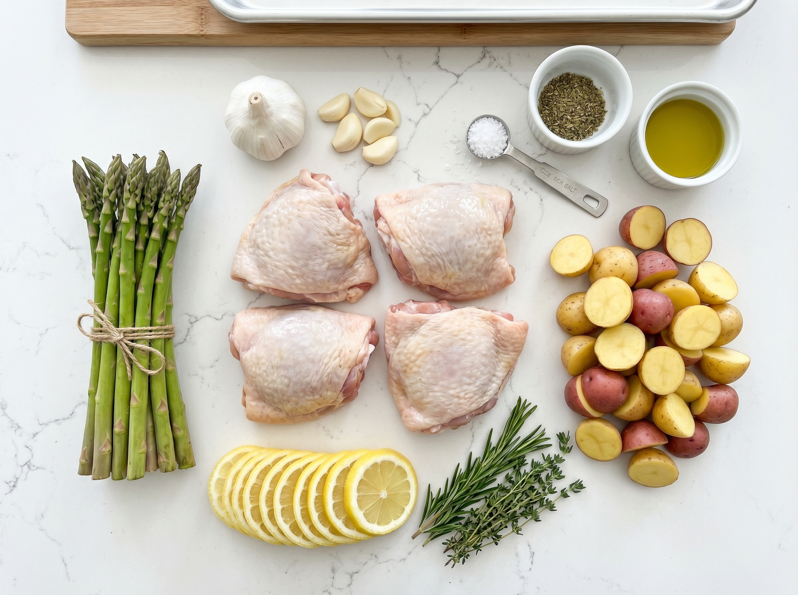
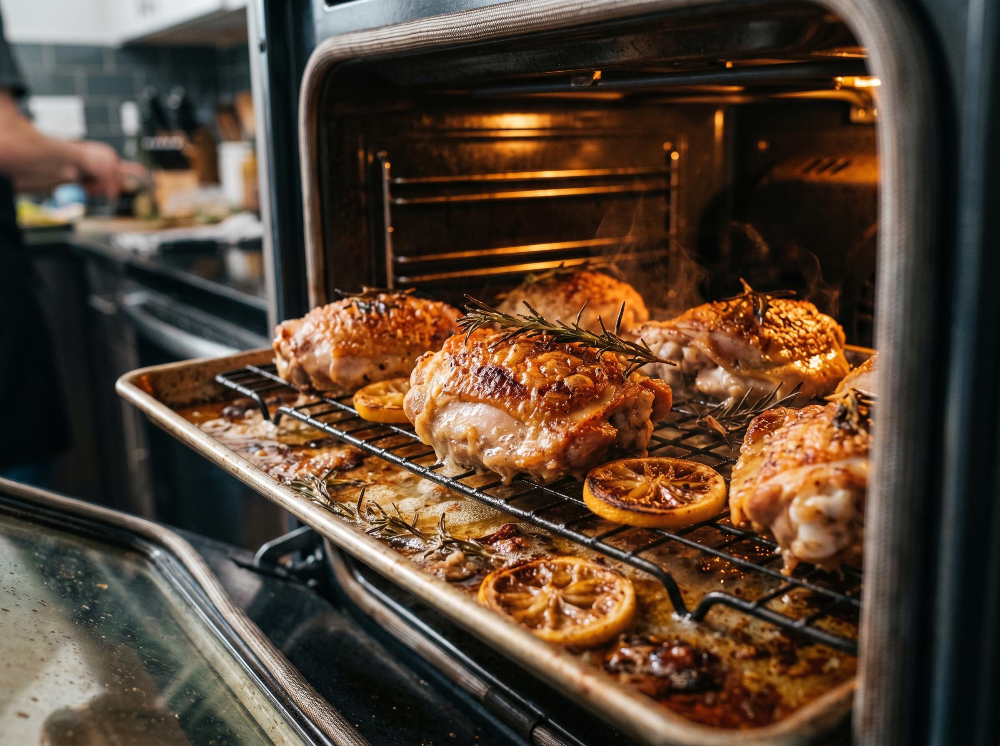
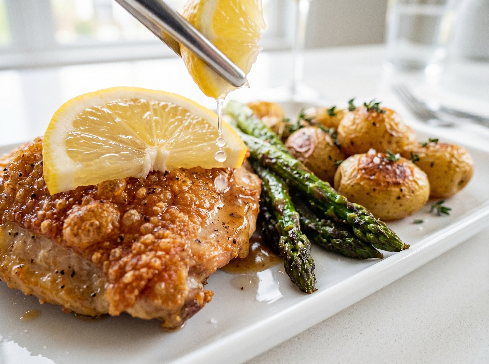

This lemon herb sheet pan chicken is the definition of a stress-free weeknight dinner. Chicken thighs, baby potatoes, and colorful vegetables all seasoned with a bright lemon-herb marinade, roasted together on one sheet pan until the chicken skin is crackling-crispy and everything else is golden and tender. Prep takes 10 minutes — the oven does all the real work.
Sheet pan dinners have become a weeknight staple in American households because of their genius simplicity: everything cooks together, the oven does the work, and cleanup is one pan plus a cutting board. This version uses a lemon-herb marinade that makes the chicken incredibly flavorful — the brightness of the lemon cuts through the richness of the chicken skin beautifully. The vegetables roast in the chicken's drippings, which makes them absolutely incredible.
Why You'll Love This Recipe
- One pan, minimal cleanup — line the pan with foil for zero scrubbing
- Complete meal on one pan — protein + carbs + vegetables all together
- Hands-off cooking — 10 minutes prep, then the oven does everything
- Crispy chicken skin — the high heat of 425°F creates an irresistible crust
- Flexible — use whatever vegetables you have in the fridge
The Secret: Hot Oven + Staggered Timing
The biggest mistake people make with sheet pan dinners is putting everything on the pan at the same time. The problem: potatoes take much longer to cook than broccoli or zucchini, which means by the time your potatoes are done, your other vegetables have turned mushy.
The solution in this recipe is simple: start the potatoes first for 15 minutes, then add the chicken and remaining vegetables. Everything finishes at the same time, perfectly cooked.
Best Vegetables for This Recipe
The recipe calls for specific vegetables but here's how to substitute with what you have:
- Broccoli — great roasted, gets slightly crispy at the edges
- Bell peppers — any color works, they caramelize beautifully
- Zucchini (courgette) — soft, mild, absorbs the lemon-herb flavor wonderfully
- Asparagus — add these in the last 15 minutes only, they cook fast
- Grape tomatoes — add in the last 10 minutes, they burst and create a natural sauce
- Red onion — caramelizes into sweet, jammy strips
Kitchen Tools
- Large rimmed baking sheet (18x13 inch / 46x33cm) — the bigger the better so nothing overlaps
- Aluminum foil (optional but makes cleanup easy)
- Instant-read meat thermometer
- Large bowl for tossing
Lemon Herb Sheet Pan Chicken
Crispy-skinned chicken thighs and perfectly roasted vegetables seasoned with lemon and herbs. One pan, one oven, zero stress.
Ingredients

Chicken & Vegetables
Lemon Herb Marinade
Instructions
- 1
Preheat and prep. Preheat oven to 425°F / 220°C. Line a large rimmed baking sheet with aluminum foil and spray lightly with cooking spray, or leave unlined. Whisk together all marinade ingredients in a small bowl or measuring cup.
- 2
Start the potatoes. Add halved baby potatoes to the sheet pan. Drizzle with half the marinade and toss to coat. Spread in an even layer and roast for 15 minutes until they've started to brown.
- 3
Add chicken and vegetables. Push the potatoes to the edges of the pan. Pat chicken thighs dry and place in the center, skin-side up. Add broccoli, bell pepper, and zucchini around the chicken. Drizzle all remaining marinade over everything. Make sure the chicken skin is facing up and hasn't been covered with sauce — exposed skin = crispy skin.
- 4
Roast to perfection. Return the pan to the oven and roast for 25–30 minutes, until the chicken skin is deeply golden and crispy and the internal temperature reaches 165°F / 74°C. The potatoes should be fork-tender and starting to crisp at the edges.
- 5
Rest and serve. Let the chicken rest on the pan for 5 minutes before serving — this lets the juices redistribute for maximum juiciness. Garnish with fresh parsley and lemon slices and serve directly from the pan.


Pro Tips for the Best Sheet Pan Chicken
- Don't crowd the pan. Crowding traps steam and prevents the vegetables from roasting — they'll stew instead of getting those crispy edges. Use the largest sheet pan you have, or use two pans.
- Skin side UP, always. The skin needs direct dry oven heat to get crispy. If it's face-down or covered with marinade, it'll steam and turn flabby.
- 425°F is the magic number. Lower temperatures (350°F) steam the food instead of roasting it. The high heat is what creates the golden, slightly caramelized exterior.
- Pat the chicken dry. Moisture on the skin is the enemy of crispiness. Use paper towels to pat the skin dry before applying any marinade.
Variations
- Mediterranean style: Add kalamata olives and grape tomatoes in the last 15 minutes. Top with crumbled feta cheese after roasting.
- Boneless thighs: Use boneless skinless chicken thighs — reduce the roasting time after adding chicken to 20 minutes.
- Different vegetables: Sweet potatoes (cut smaller, they take longer), green beans, asparagus (add last 10 min only), cherry tomatoes (add last 10 min only).
- Spicy version: Add 1 teaspoon cayenne pepper and a tablespoon of harissa paste to the marinade.
Storage & Reheating
Refrigerator
Store in an airtight container for up to 4 days.
Freezer
Freeze cooked chicken (without vegetables) up to 3 months.
Reheat
Reheat in the oven at 400°F for 10 minutes to re-crisp the skin. Microwave works but skin will be soft.
Frequently Asked Questions
Can I use boneless, skinless chicken thighs?
Yes. Boneless thighs cook faster (20–22 minutes instead of 25–30) and you'll lose the crispy skin, but they're still juicy and delicious. They're also easier to eat — great for families with kids. Reduce the oven time accordingly and check for 165°F / 74°C internal temperature.
Can I prep this ahead of time?
Absolutely. Mix the marinade and coat the chicken and potatoes up to 24 hours ahead — store separately in the fridge. The longer the chicken marinates, the more flavorful it becomes. Cut the vegetables the day before and store in sealed bags. The actual cook time doesn't change.
My vegetables are burning before the chicken is cooked — what do I do?
Cover the vegetables loosely with a piece of foil for the last 10 minutes while the chicken finishes. Or remove the finished vegetables to a plate and let the chicken cook uncovered until done. Next time, cut the vegetables slightly larger so they take longer to cook.
Where do I find baby potatoes in US stores?
Baby potatoes (also called new potatoes or fingerling potatoes) are in the produce section of every major US grocery store — Walmart, Kroger, Whole Foods, Trader Joe's. They come in bags labeled "petite potatoes," "baby potatoes," or "little potatoes." If you can't find them, regular russet or Yukon Gold potatoes cut into 1-inch cubes work just as well.
Nutrition Information
Per serving (1 chicken thigh + vegetables). Values are estimates.
| Nutrient | Amount |
|---|---|
| Calories | 460 kcal |
| Total Fat | 22g |
| Protein | 38g |
| Carbohydrates | 28g |
| Fiber | 4g |
| Sodium | 490mg |
You Might Also Love


What Vegetables Did You Use?
This recipe is one of our most versatile — every cook puts their own spin on it. Tell me what vegetables you used in the comments! And pin this for your next easy weeknight dinner.
📌 Save on Pinterest